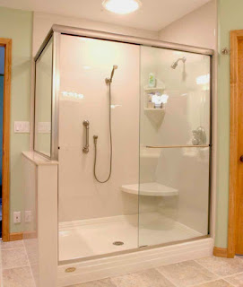
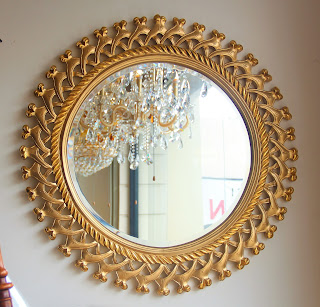

Kaca yaitu kebutuhan yang krusial bagi sebuah industry maupun gedung. Kaca semakin melengkapi bangunan agar terlihat lebih menawan dan mempunyai poin estetika seandainya di pandang orang.
Ragam-tipe kaca diantara lain kaca tempered, kaca shower, railing kaca, kanopi kaca Salatiga dan masih banyak lagi. Semua material tersebut bisa di aplikasikan harga sebuah hunian kelihatan lebih indah nyaman dan juga aman. Berikut ini sedikit penjelasan mengenai beragam variasi kaca dan fungsi kaca dan juga parket lantai kayu jati yang bisa anda peroleh.
Distributor, Supplier & Jasa Pasang Kanopi Kaca Salatiga
Seiring dengan perkembangan zaman di dunia properti, sekarang kanopi kaca Salatiga telah berkembang cepat mengikuti arsitektur modern. Seiring dengan perkembangan zaman di dunia properti, kini kanopi kaca Salatiga terlah berkembang pesat mencontoh arsitektur modern . Sifat utama material bahan atap akrilik juga bisa disebut atap acrylic, ini yakni warnanya yang jernih tembus pandang. Harga atap kaca per meter persegi juga amat dipengaruhi oleh struktur pendorong yang di gunakan. Disinilah letak perbedaan optis yang utama antara akrilik (acrylic) dengan kaca. Jika tembus pandang, kaca meresap cahaya yang masuk sehingga kian tebal kaca maka kian sedikit cahaya yang bisa melaluinya, karenanya sifat transparannya makin berkurang.|Di samping pintu kaca shower akan membikin kamar mandi kecil nampak lebih besar. Pada atap akrilik, perembesan sinar yang terjadi demikian kecil sehingga walaupun ketebalannya bertambah, sifat transparannya tak banyak berubah.
Ini tampak dari bahan material yang di pakai dalam pembuatan kanopi kaca Salatiga. Apabila fungsi utama kanopi sebagai pelindung untuk bangunan tersebut, pemasangan kanopi kaca Salatiga juga bisa membuat bangunan menjadi nampak lebih cantik dan menarik, apalagi memakai konsep yang sama dengan konsep rumah minimalis. Setelah kaca untuk atap kanopi cukup digemari. Tak anda sedang mencari kanopi kaca Salatiga, anda bisa seketika mengunjungi dis.or.id. Disana anda akan mendapat kanopi kaca Salatiga yang sesuai dengan beraneka ketebalan dan harga yang cukup terjangkau.
Info Lengkap Pemesanan
Google Maps: https://www.google.com/maps/d/u/0/viewer?mid=12-N5cMmHbEOEG6n-94L4JatnBnNRTFkr&ll=-7.27380280025364%2C112.65243155000007&z=18
Note: https://www.facebook.com/notes/distributor-of-industrial-supply/kontraktor-jasa-pasang-kanopi-kaca/1785710151728864/
Event: https://www.facebook.com/events/227495344457982/
Portfolio Produk: https://www.facebook.com/1681607345472479/photos/?tab=album&album_id=1712629809036899
Distributor & Supplier Kaca Shower

Penyekat ini akan memisahkan antara tempat basah yang diterapkan untuk mandi atau meletakan shower dan tempat lain yang yakni zona kering. Tak berkeinginan lebih total lagi, kamar mandi yang menerapkan shower ini bisa dilengkapi dengan komponen lain adalah shower screen atau bisa disebut dengan kaca shower. Tak hanya menawan namun kaca shower dapat menjadi kaca pembatas antara lantai kering dan berair pada kamar mandi. Ada beberapa alasan mengapa Pintu Kaca Shower banyak diaplikasikan salah satunya merupakan kaca lebih kelihatan bersih dan rapi dan juga lebih mudah dalam perawatannya. Di samping pintu kaca shower akan membuat kamar mandi kecil tampak lebih besar. Apalagi sekarang sudah ada warung penjual shower screen yang menjual produknya dalam sistem satu paket termasuk pemasangannnya. Kita tak perlu repot lagi mencari tukang sendiri karena pemasangan alat sekat ini memang membutuhkan teknik tersendiri.
Tak anda sedang memerlukan kaca shower untuk kamar mandi anda, anda bisa seketika mengunjungi dis.or.id. Tidak cuma itu, kaca shower yang di beli di dis.or.id pemasangan lebih gampang dan fleksibel. Harga yang ditawarkan malahan tergolong benar-benar murah.
Distributor, Supplier & Jasa Pasang Kanopi Kaca

Banyak variasi kaca kanopi yang diaplikasikan sebagai atap, tidak cuma satu variasi saja. Atap kaca skylight ditujukkan untuk mendapatkan cahaya alami UV yang mempunyai fungsi sebagai penerangan dalam sebuah ruang. Jadi telah tidak heran lagi segala orang mau mencari harga yang amat kompetitif untuk menyesuaikan budget atau anggaran mereka masing – masing untuk membikin produk canopy kaca. Ada beberapa alasan kenapa Pintu Kaca Shower banyak digunakan salah satunya ialah kaca lebih kelihatan bersih dan rapi dan juga lebih gampang dalam perawatannya. Sekiranya tembus pandang, kaca menyerap sinar yang masuk sehingga semakin tebal kaca karenanya semakin sedikit cahaya yang bisa melewatinya, karenanya sifat transparannya makin berkurang.|Di samping pintu kaca shower akan membikin kamar mandi kecil terlihat lebih besar. Atap akrilik atau bisa juga disebut atap kaca acrylic ini banyak ditemukan di sebuah bangunan rumah, seperti ruko, apartemen, resto, mall, hingga bangunan gedung.
Tak anda berminat untuk memasang kaca kanopi pada rumah, gedung maupun kantor, anda dapat langsung mengunjungi dis.or.id. Jika itu, kanopi juga dapat melindungi mobil dan kendaraan lain anda. Tak anda sedang mencari kanopi kaca Salatiga, anda bisa langsung mengunjungi dis.or.id.
Jasa Maintenance Kaca
Jasa maintenance kaca menjadi solusi bagi Anda yang mempunyai gedung yang terbuat dari kaca. Salah satunya pelayanan berupa pembersihan gedung yang terbuat dari kaca. Kecuali cuma membersihkan kaca, jasa maintenance kaca juga bisa melaksanakan koreksi. Jika itu, kapabel membersihkan bangunan kaca melengkung.
Tak anda mebutuhkan jasa maintenance kaca, anda bisa mengunjungi dis.or.id. Dis.or.id mempunyai semua energi pakar yang di rekrut hanya mereka yang profesional yang tahu persis bagaimana metode menggunakan alat dan bagaimana membersihkan kaca gedung bertingkat. Dengan sudah memberikan training terhadap tenaga ahli sehingga mereka sudah bisa melakukan profesi mereka dengan sungguh-sungguh bagus. Selain cuma dalam hal membersihkan kaca, mereka juga kapabel menjalankan koreksi serta penggantian kaca yang mengalami kerusakan.
Jasa Pemasangan Kaca Tempered
Tak yang telah di ketahui bahwa jasa pemasangan kaca tempered hanya dilakukan oleh orang yang profesional. Diperlukan kaca ini diciptakan dari kaca float bermutu tinggi melalui proses pemanasan thermal di mana kaca dipanaskan sampai pada titik lunak kemudian didinginkan dengan cepat. Untuk komponen perkantoran, pintu, partisi, serta balkon umumnya terbuat dari kaca tempered. Kecuali sembarang tukang juga bisa melakukan cara kerja pemotongan ini. Tetapi dahulu hanya gedung perkantoran atau pusat perbelanjaan modern saja yang menggunakan ragam kaca ini, kini rumah hunian juga sudah dibangun dengan kaca tempered.
Salah satu macam kaca yang pantas untuk diterapkan pada semua jenis bangunan maupun perindustrian ialah kaca tempered, yaitu yang paling aman karena mempunyai elastisitas lebih bagus dibandingi dengan kaca umumnya. Melainkan, pemasangan kaca tempered ini mesti ekstra hati-hati. Disana anda dapat memanfaatkan jasa pemasangan kaca tempered untuk seluruh variasi bidang ataupun bangunan. Kalau aman kaca tempered juga kapabel memberikan kesan estetika yang sungguh-sungguh baik dibandingkan dengan kata macam lainnya. Anda dapat langsung mengunjungi dis.or.id untuk mendapatkan informasi mengenai jasa pemasangan kaca tempered, memakai kaca tempered dan pastinya hasil yang diberikan bahkan akan cocok dengan apa yang Anda inginkan.
Distributor & Supplier Pintu Kaca

Pintu kaca amat bermanfaat bagi anda yang mau menabah kesan gedung lebih indah dan mewah. Ada banyak desain pintu kaca yang dapat kita temui seperti pintu kaca berbentuk sliding (geser) atau folding (lipat). Kekuatan tipe kaca yang bisa Anda pilih untuk pintu kaca Anda seperti kaca tempered yang sedang booming atau kaca non-tempered yang harganya lebih relatif murah. Desain hal yang demikian dapat disesuaikan dengan konsep properti Anda. beberapa tipe kaca yang paling sering kali diaplikasikan untuk membikin pintu kaca, mulai dari tipe kaca tempered sampai kaca non-tempered. Sekarang paling banyak diminati dikala ini yaitu kaca tempered karena jauh lebih kuat dan bendung lama.
Anda bisa menerima pintu kaca yang diperlukan dengan mangunjungi dis.or.id. Dengan kekuatan spesialis yang telah amat handal dalam membikin pelbagai contoh pintu kaca.
Kaca yang di pakai yaitu kaca dengan kualitas terbaik. Dis.or.id memiliki kekuatan yang telah benar-benar profesional di bidang ini.
Jual Kaca Cermin

Kaca cermin kini tidak cuma dipakai sebagai aksesoris untuk perabotan seperti lemari rias. kaca cermin lazim dipakai pada bukaan pintu atau jendela dinding luar, yang nantinya diinginkan berpenampilan mewah pada bangunan. Anda bisa tentukan desain seperti apa yang Anda inginkan. Ada cermin persegi yang ditempelkan beraturan, cermin berbentuk seperti daun, dan lain sebagainya. Ada cermin yang didesain unik seperti penyerupai daun, oval, dan lain sebagainya. Jadi, Anda dapat sesuaikan desainnya dengan desain ruangan yang akan Anda pilih untuk menempatkan cermin hal yang demikian. Cermin minimalis memiliki siku. Seandainya itu, kadang kala cerminnya tidak ada piguranya atau yang kerap disebut dengan kaca cermin frameless.
Anda juga dapat tentukan apakah ingin memiliki cermin yang mempunyai bingkai atau tak. Tak saja, desainnya saja yang dirubah. Atau Anda bisa memilih cermin yang dibangkai dengan berjenis-jenis ragam bahan seperti kayu, aluminum, plastik, dan bahan lainnya. Karenanya cuma persegi atau persegi panjang. Sementara itu, Anda yang berada di dalam ruangan dapat memperhatikan orang lain yang ada di luar. Cermin ini lazimnya ditempatkan di kamar mandi, di atas wastafel, atau di kamar tidur. Tersedia kaca cermin dengan berbagai ukuran yang bisa anda pesan di dis.or.id.
Jasa Pemasangan Railing Kaca
Railing kaca bisa membuat rumah Anda semacam itu kelihatan minimalis. Mungkin hal ini disebabkan semakin banyak pemilik rumah yang berharap memperlihatkan sebuah desain interior rumah yang benar-benar minimalis. Anda dapat memilih desain sesuka hati Anda. Pastikan bagian tersebut terbuat dari bahan aluminum yang kuat. Dan kaca ini bisa Anda gunakan sebagai bahan untuk membikin kaca railing. Namun, bukan hanya figur yang sebaiknya Anda jadikan pertimbangan dikala berkeinginan mengorder railing kaca ini. Tapi kaca pecah, kaca tempered tidak akan melukai orang yang terkena kaca tempered hal yang demikian lantaran pecahan seperti itu kecil dan lembut, tidak berupa kepingan yang runcing.
Anda dapat memilih kaca dengan kualitas terbaik. Anda dapat memilih kaca tempered sebagai bahan utamanya. Ada kaca tempered yang kini diminati banyak orang. Kaca ini benar-benar kuat dan juga aman. Dikatakan amat aman lantaran kaca tempered tak memunculkan pecahan yang runcing saat tiba-tiba kaca pecah entah itu imbas kecelakaan atau petaka seperti gempa. Seandainya juga dengan railing. Pastikan juga aluminum ini sungguh-sungguh bagus dan kuat.
Bagi anda yang sedang mencari railing kaca dengan mutu terbaik, anda bisa segera kunjungi dis.or.id. Dengan harga yang sungguh-sungguh relatif murah, anda bisa langsung menerima railing kaca yanag anda inginkan. Tentu dengan harga yang murah tapi tetap berkelas.
Distributor & Supplier Pintu Lipat Kaca
Secara awam, kaca dibagi menjadi 6 jenis, yaitu kaca bening, kacang berwarna atau tinted glass, kaca es, kaca cermin atau one way glass, kaca laminasi, dan yang terakhir kaca tempered. Memang dibandingi dengan ragam kaca lainnya, harganya lebih mahal. Akan tapi, terpautnya tidak terlalu signifikan.
Ukuran kaca menjadi faktor penentu berapa harga pintu kaca lipat yang Anda inginkan. Akan tapi, ada juga penentu harga lainnya seperti aksesoris. Hinges ialah aksesoris vital, sebab aksesoris inilah yang berperan untuk menopang berat pintu kaca lipat. Jadi, bukan hanya pintu saja yang berupa kaca, tetapi juga segala sekat ruangan.
Jasa Pemasangan Kubikel Toilet

Kalau anda mengininkan kamar kecil yang layaknya mall ataupun hotel, ada bagusnya anda mengaplikasikan kubikel WC. Banyak profit yang bisa didapatkan dengan memakai kubikel toilet seperti bisa membuat toilet tampak lebih bersih dan juga cuma membutuhkan sedikit space.
Anda juga dapat membuat WC di space yang lebih kecil dan tak memerlukan lahan yang begitu besar untuk membikin WC yang banyak. Seandainya anda berminat untuk memiliki kubikel toilet, anda dapat lantas mengunjungi dis.or.id.
Harga yang ditawarkan pun cukup relatif murah.
Tapi penerapan kaca di kamar mandi dapat jadi problem saat Anda meletakkannya dengan salah. Justru embun dapat merekat di kaca dan lambat laun bisa membikin kaca tak sejernih semula. Kalau anda saat ini sedang membutuhkan kaca shower untuk kamar mandi, seketika saja kunjungi dis.or.id untuk melakukakn pengorderan ataupun menanyakan detil harga dari kaca shower.
Distributor & Supplier Partisi Kaca
Partisi kaca menjadi alternatif yang bagi Anda yang ingin menghemat bangunan. Anda dapat bandingkan sendiri berapa yang Anda harus siapkan untuk membuat partisi tembok. Anda harus beli batu bata, pasir, dan semen. Belum lagi tarif pemasangan yang murah. Anda bisa menghitung sendiri berapa uang yang patut Anda siapkan untuk membeli bahan untuk partisi tembok. Alasan yang ketiga, partisi kaca ini tidak menghabiskan space. Jadi, Anda akan berhemat jikalau memilih untuk memasang partisi kaca ini. Anda bisa mencontoh mereka. Kecuali, Anda wajib tahu ada desain yang berbeda. Ada partisi kaca frameless atau tanpa pigura dan partisi dengan . itu, tentukan juga tipe kaca yang berkeinginan diterapkan apakah transparan, semi transparan, atau kaca cermin yang membuat ruangan privat. Partisi kaca dengan kualitas terbaik dan bermutu bisa anda peroleh di dis.or.id. Disana anda bisa mendapatkan partisi kaca dengan harga yang sangat terjangkau. Disana anda akan mendapatkan partisi kaca yang layak dengan kemauan anda.